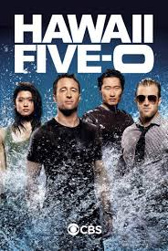

INFORMACIÓN
- Hawaii Five-0 (en español Hawai Cinco-0) es una serie de televisión de crimen y drama estadounidense, es un remake de la serie de televisión original de 1968-1980. La serie es producida por K/O Paper Products y 101st Street Television en asociación con CBS Productions.
- Hawaii Five-0 debutó en CBS, la misma cadena que emitió la versión original. Al igual que en la versión original, se sigue una unidad de élite de la policía estatal/grupo de trabajo creado para combatir la delincuencia en el estado de Hawái.
- El 23 de enero de 2011, la serie levantó el índice de audiencia más alto hasta la fecha, con el decimoquinto episodio de la primera temporada que dio 19.230.000 de espectadores en Estados Unidos.
- El 15 de mayo de 2011, la serie fue renovada para una segunda temporada, que salió al aire el 19 de septiemEl 13 de marzo de 2014 la CBS renovó la serie para una quinta temporada.
- El 11 de mayo de 2015 la CBS renovó la serie para una sexta temporada. El 25 de marzo de 2016 la CBS renovó la serie para una séptima temporada. El 25 de mayo de 2017 la serie fue renovada para una octava temporada.
- El 23 de agosto de 2012 la CBS renovó la serie para una tercera temporada.
- El 13 de marzo de 2014 la CBS renovó la serie para una quinta temporada. El 11 de mayo de 2015 la CBS renovó la serie para una sexta temporada.
- El 25 de marzo de 2016 la CBS renovó la serie para una séptima temporada.El 25 de mayo de 2017 la serie fue renovada para una octava temporada.
- Representante de la seguridad pública del gobernador Jameson, asesinada también al final de la temporada 1.